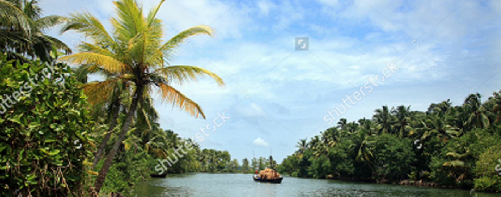
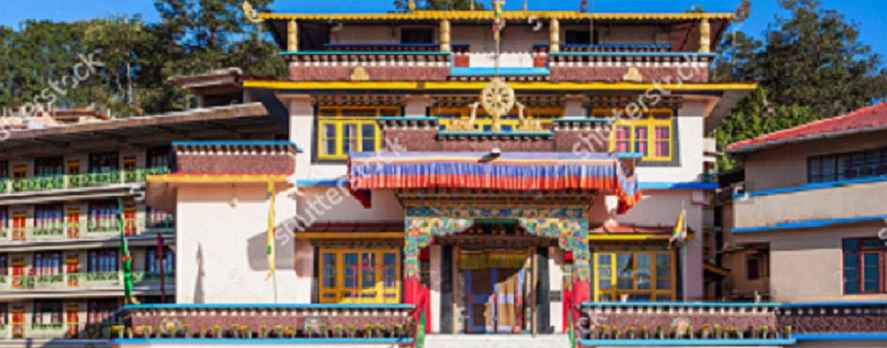

Popular destinations
Kerala

Kerala is situated on the southwestern tip of the Indian mainland on the Arabian Sea.
According to the geographical features, the state can be divided into hills and valleys,
midland plains and coastal belts.In the coastal belts of this state are situated world famous backwaters that are more or less main attraction of Kerala.
Tamil Nadu

The state boasts of a wide range of topological features. There are chains of mountains, the highest being the Mullayyana Giri . There are plateaus, residual hills and coastal plains also.
Tamil Nadu is bounded in the north by Andhra Pradesh and Karnataka, in the south by the Indian Ocean,
in the east by the Bay of Bengal, and by Kerala in the west.
Sikkim
Sikkim is bound by Tibet (China) in the north, West Bengal in the south, Tibet and Bhutan in the east and Nepal in the west. The state is spread below Mount Kanchanjunga , the third highest peak in the world. The Rangeet and the Teesta are the major river systems of state. These rivers cut through the valleys and in addition there are 180 perennial lakes at different altitudes.